Acordar travado, sentir aquela dor que irradia para a perna ou não conseguir permanecer sentado não precisa fazer parte da sua rotina.
Você não precisa viver a base de remédios, continuar perdendo dias de trabalho e investir em mais exames de imagem.
Você se identifica com algum desses sinais?
- Dor persistente na cervical ou lombar
- Rigidez ao se levantar ou após longos períodos parado
- Desconforto que irradia para pernas ou braços
- Dificuldades para sentar, dirigir ou dormir
- Medo de piorar a dor ao realizar tarefas simples
Se a sua coluna já vem limitando os seus movimentos e a sua liberdade, é hora de buscar um cuidado especializado que realmente entenda a sua dor.
Por que a dor na coluna aparece e insiste em ficar?
A dor na coluna raramente surge do nada. Ela é, muitas vezes, o resultado de uma soma de fatores que sobrecarregam seu corpo ao longo do tempo.
- Hérnia de disco com compressão nervosa
- Horas em frente ao computador ou celular, com postura inadequada
- Sedentarismo, acarretando em músculos fracos
- Estresse e fatores emocionais que se manifestam como rigidez muscular
Assista ao vídeo abaixo e entenda o que causa a sua dor e o que fazer para sanar esse incômodo
DEPOIMENTOS
Veja o que dizem nossos pacientes
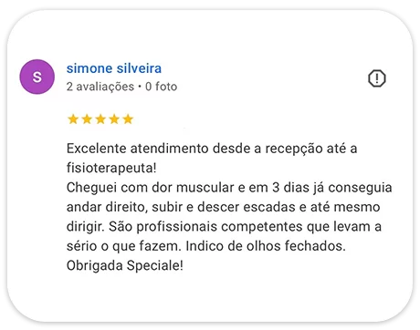
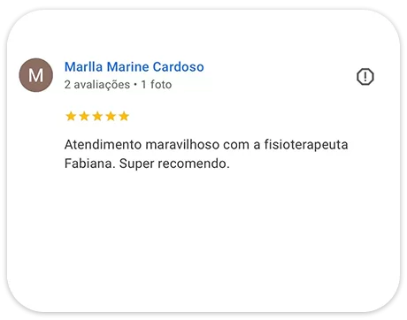
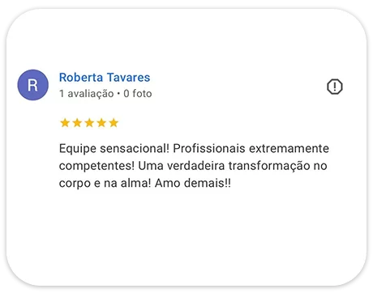
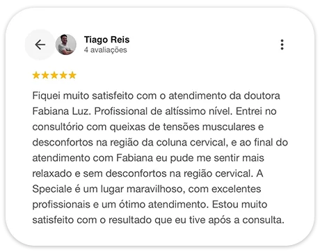
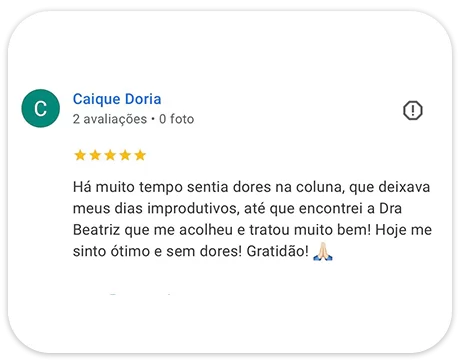
Na Speciale, sua coluna recebe um cuidado especializado
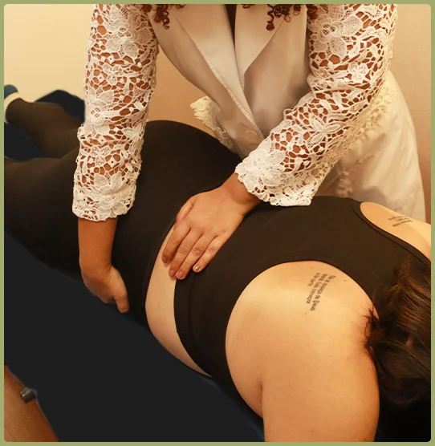

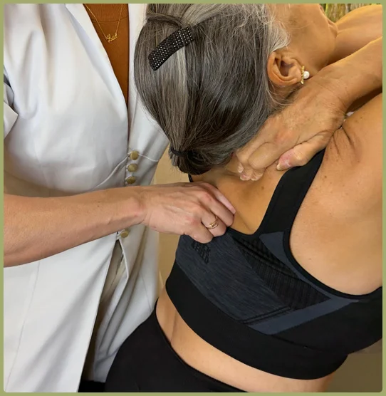
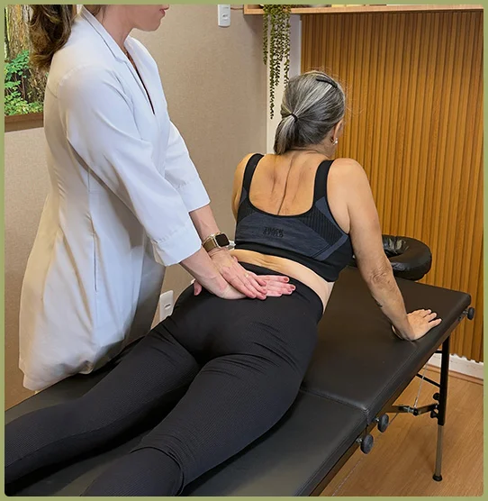

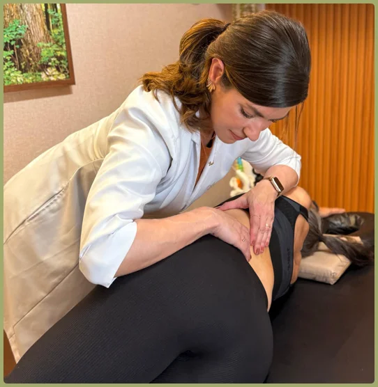
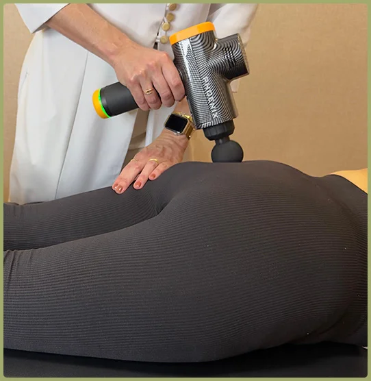
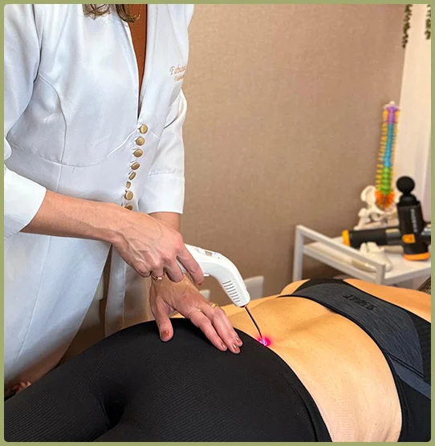
Na Speciale, sua coluna recebe um cuidado especializado
- Foco na Causa Raiz: Não tratamos apenas os sintomas e sim a origem da sua dor
- Um Atendimento que respeita a sua individualidade
- Plano Personalizado: Cada etapa é desenhada exclusivamente para as necessidades do seu corpo
- Uma abordagem atualizada que respeita as evidências científicas
Atendimento Particular
(Não trabalhamos com convênios)
Por que o Método Coluna Livre é diferente?
Enquanto muitos tratamentos aliviam apenas os sintomas, o Método Coluna Livre trata o que realmente causa a sua dor.
Como costuma ser o atendimento em clínicas de fisioterapia tradicionais:
- Sessões rápidas e genéricas;
- Recursos como TENS, gelo e aparelhos que aliviam na hora, mas não resolvem;
- Atendimentos em grupo e sem continuidade real;
- Foco apenas “onde dói” — e não no que está provocando a dor;
➡️ O resultado é sempre o mesmo: melhora um pouco, mas a dor volta.
Como funciona o Método Coluna Livre:
- Avaliação minuciosa e atendimento individualizado para entender de verdade como sua coluna está funcionando;
- Foco na causa raiz e não apenas nos sintomas
- Terapias manuais avançadas (articular | miofascial | neural), que aliviam tensões, destravam movimentos e reduzem a dor;
- Recursos modernos, como Tração Saunders, Laser e LED, quando indicados;
- Plano de evolução personalizado, adaptado à sua rotina e ao seu corpo;
- Acompanhamento constante para garantir melhora real e duradoura;
➡️ Resultado: alívio, segurança, confiança para se movimentar e muito mais qualidade de vida.
Imagine a sua vida sem a dor que te limita. Você merece:
- Dormir melhor
- Trabalhar com conforto
- Mover-se livremente
- Praticar esportes com segurança
- Viajar sem medo
Quem cuida da sua coluna na Speciale
Fabiana Luz
Fisioterapeuta há 18 anos
- Pós graduada em Terapia Manual e Postural;
- Pós graduanda em Fisioterapia Ortopédica com ênfase no Tratamento da Dor;
- Terapia Articular Avançada com ênfase Quiropráxica;
- Reabilitação Avançada da Coluna Vertebral;
- Terapia Mecânica Avançada para Hérnia de Disco;
- Tratamento Ativo da Coluna Lombar por Subclassificação
- Tratamento Ativo da Coluna Cervical por Subclassificação;
- Reeducação Postural Global (RPG)
- Liberação Miofascial – método IASTM
- Liberação Miofascial – Certificação Completa método Salik

Beatriz Ferreira
Fisioterapeuta há 10 anos
- Pós graduada em Disfunção da Articulação Temporomandibular (DTM) e Dor Orofacial
- Terapia Articular Avançada com ênfase Quiropráxica;
- Reeducação Postural Global (RPG);
- Tratamento Ativo da Coluna Lombar por Subclassificação
- Tratamento Ativo da Coluna Cervical por Subclassificação
- Liberação Miofascial Manual e Instrumental
- Liberação Miofascial – Certificação Completa método Salik
- Terapia Manual Aplicada a Coluna Vertebral
Atendimento Particular
(Não trabalhamos com convênios)
Às vezes, durante ou após as sessões, percebemos que existe algo mais estrutural por trás da tensão — relacionado à postura, à coluna ou ao padrão de movimento do corpo.Se for o seu caso, a Speciale também oferece:
Liberação Miofascial
Alivie tensões musculares e entenda o que está causando seu desconforto com um atendimento especializado e personalizado.
Pilates Personalizado
A continuação natural para quem quer manter os resultados e construir um corpo mais forte, móvel e resistente. Turmas de até 5 alunos, conduzidas por fisioterapeutas, adaptadas ao seu caso.
Ainda com dúvidas?
Perguntas Frequentes
Como saber se meu caso é cirúrgico?
Por que só medicamentos ou bloqueios não resolvem?
Os medicamentos são paliativos, ou seja, só agem nos sintomas. Ao parar de se medicar, as dores voltam. A fisioterapia especializada vai agir na descompressão do nervo, ou seja, na causa da dor, na origem do problema. Por isso, só medicamentos ou bloqueios não vão resolver o problema de forma duradoura.
Quiropraxia faz parte do tratamento?
A quiropraxia é uma das técnicas que abordamos no nosso plano de tratamento especializado em coluna, pois acreditamos que o somatório de técnicas articulares, miofasciais, neurais e exercícios terapêuticos específicos em conjunto trazem melhores resultados aos nossos pacientes.
Por que não trabalhamos com planos de saúde?
Nós optamos pelo atendimento particular porque nosso padrão de qualidade exige dedicação total a um paciente por vez, com alta resolutividade clínica.
Como o tratamento é 100% focado, personalizado e assertivo, o alívio é mais rápido, exigindo menos sessões.
Preciso passar pelo médico para fazer esse tratamento?
Não é necessário. O fisioterapeuta especializado pode ser o profissional de primeiro contato com o paciente. Logo, não precisa de solicitação médica para iniciar o tratamento.
Quantas sessões geralmente são necessárias?
A conduta fisioterapeuta é definida após a avaliação detalhada. O número de sessões varia conforme a condição clínica e resposta de cada paciente. Alguns pacientes melhoram já nas primeiras sessões, outros, um pouco mais, portanto não há um número fixo, mas a fisioterapeuta irá monitorar e ajustar conforme a necessidade do paciente.